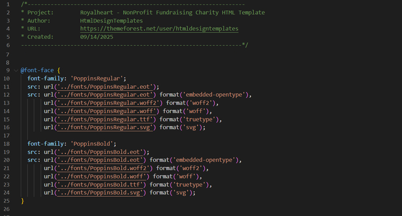
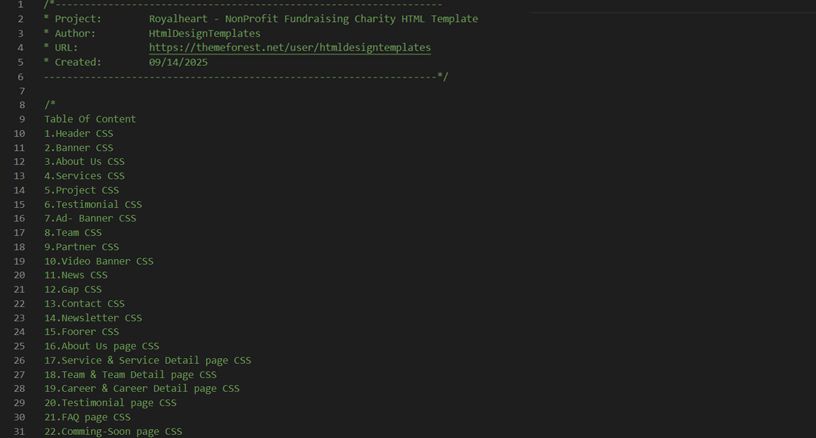
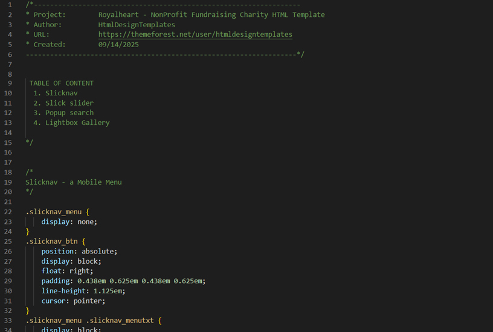

Royalheart - NonProfit Fundraising Charity HTML Template
- Created: 09/14/2025
- By:HtmlDesign Templates
- Email: htmldesigntemplates@gmail.com
RRoyalHeart is a highly suitable to create a pro-level and functional website for charity, nonprofit, crowdfunding, fundraising, charity foundation, crowdfunding startup, welfare, NGO, charity hub, and
donations websites as well as other similar businesses websites.
Royalheart is designed & developed by planning, designing, and creating them for guaranteeing customer’s happiness and satisfaction.
We used latest Bootstrap 5 and has smooth animation, clean features, modern and unique design which make your website more beautiful. This template was built in HTML5 and CSS3, with parallax image effects and CSS animations to make it even more appealing and dynamic.
Super Features
- 4 Homepage
- 2 News Pages
- 12 Other Inner Pages
- Latest Bootstrap Integration
- 100% Fully Responsive Design
- Retina ready
- Neat and clean design
- Clean Code
- Browser Compatibility
- Fontawesome
- Google webfonts
- Extensive Documentation
- All files are well commented
- Working Contact Form
Files and folders structure
Whole template is divided in to several folders and their content defines by the folder names easily.
Royalheart - NonProfit Fundraising Charity HTML Template
- Images(all images and backgrounds patterns)
- css
- style.css(main stylesheet)
- plugin.css(related css of used plugin)
- Default.css(related css of default used)
- js
- jquery-3.7.1.min.js(latest jquery library)
- bootstrap.bundle.min.js(framework v5.3.3)
- main.js(Custom js codes for plugins)
- plugin.js(include different js)
- Latest Bootstrap 5.3.3
- All neccessary item for bootstrap
- Fonts
- Inter
- Playfair
- Icons
- Fontawesome
HTML Structure
Royalheart is based on Bootstrap Grid that can help you rapidly develop sites that look beautiful at any size, be it a laptop screen or mobile devices.
The syntax is simple and it's effective cross browser, but the awesome part is that it also has the flexibility to go mobile like a champ. You can really easily customize all part of site or build new.
Step 1: Add HTML container

Step 2: Add row and columns (from one to twelve)

For More information, please visit https://getbootstrap.com/
CSS Structure
Step 1: Default CSS Structure
Step 2: Style CSS Structure
Step 3: Plugin CSS Structure
Slick Slider
You don't need any special markup. Please follow like as below image.

For more informations, please visit http://kenwheeler.github.io/slick/
Note: we have used different looks in different pages which are control by its function on slick slider. So, if you want to change then please visit above slick link.
Icons font
Royalheart - Mutipurpose Ecommerce HTML5 Template used fontawesome 4/5, Simple-Line-Icons. fonts for its icons requirement and no images has been used for any icon. A complete list of icons along with the class names can be found here:
To use an icon on any page of the theme use the below code:
"fa-name of the class found at the abobe url"
"fab-name of the class found at the abobe url"
"sl sl-icon-name of the class found at the abobe url"
All icons class name will always start with the fa-, fab-, fas- . There are several sizes for icons are predefined in the fonts.css inside css folder. i.e. fa-lg, fa-2x, fa-3x, fab-facebook etc
Images sources
All Images are taken from Pexel & Unsplash. All photos published on Unsplash are licensed under Creative Commons Zero which means you can copy, modify, distribute and use the photos for free, including commercial purposes, without asking permission from or providing attribution to the photographer or Unsplash.
Responsive Version
Here we did very clean responsive on mobile and other device where used slicknav for responsive navigation and other did from css with its own device sizes.

Source Credits
Once again, thank you so much for purchasing this template. As I said at the beginning, I'd be glad to help you if you have any questions relating to this template. No guarantees, but I'll do my best to assist.
If you have a more general question relating to the template on ThemeForest, basic HTML/CSS/JavaScript related questions, you might consider visiting the forums and asking your question in the "Item Discussion" section.
Best Regards,
HtmlDesign Templates